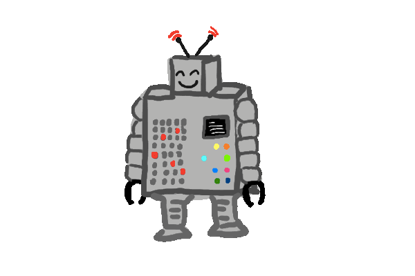

My Awesome Automatons Project
Created By: KMedinaTheDev
This is a little program that performs a task in a virtual world. My automaton will be a mail-delivery bot picking up and dropping off parcels.
- The first bot, "randomRobot", finds a random route through the village for picking up and deliving all parcels.
- The second bot, "routeRobot" has a specified mail route, which performs the tasks at hand faster than the randomRobot, but is still not the most efficient.
- The third bot, "goalOrientedRobot", aka the smart bot, can pick up and drop off parcels on the same turn if they are addressed to it's current location, taking the least amount of turns for deliveries.